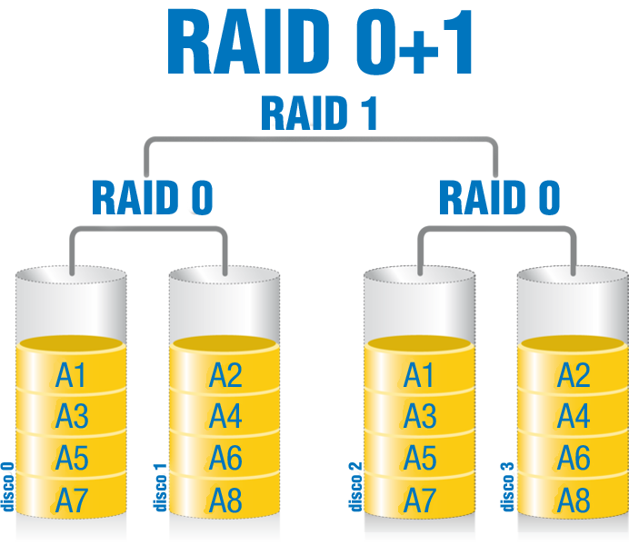

Material resumido por David Romero Santos
Cuando hablamos de seguridad en el hardware, en la mayor parte de los casos nos referimos a seguridad física. El objetivo principal de la seguridad en el hardware, consiste en mantener el buen funcionamiento de los dispositivos que forman el sistema informático, como ordenadores y periféricos, routers, cableado, etc.
Podemos definir la monitorización del hardware como una serie de procedimientos por software o hardware cuya finalidad es obtener determinados parámetros físicos del hardware y de esta forma poder controlar su correcto funcionamiento y comprobar que dichos parámetros se encuentras dentro de los rangos oportunos.
Para realizar una monitorización por hardware necesitarás algún tipo de medidor como un polímetro mediante el cual podrás medir diferentes magnitudes como el voltaje, la resistencia o la intensidad de la corriente que circula a través de un circuito.
Si bien hay veces en que se hace necesario utilizar elementos hardware para monitorizar, es habitual utilizar software para comprobar algunos parámetros de la CPU como voltaje o temperatura. Un ejemplo de este software que monitoriza parámetros físicos del hardware es el programa Everest.
En primer lugar, es una buena costumbre guardar nuestro trabajo tras intervalos de tiempo no demasiado largos. Además de esto, existen dispositivos hardware que pueden evitar este y otros problemas derivados del suministro eléctrico.
¿Nunca has pensado que las fluctuaciones de alimentación pueden dañar los equipos o sus datos? Los sistemas de alimentación ininterrumpida (UPS, acrónimo en inglés de Uninterrupted Power System, significa sistema de alimentación ininterrumpida) proporcionan protección de alimentación y aseguran los equipos informáticos y sus datos críticos contra daños causados por una alimentación inconsistente y fluctuante.
Un sistema de alimentación ininterrumpida (de aquí en adelante SAI) es un dispositivo que te permite proteger a los equipos y en consecuencia a sus datos, de posibles fluctuaciones en el suministro eléctrico. Además, disponen de una batería que te permitirá mantener el equipo en marcha durante el tiempo suficiente para guardar los datos y cerrar de forma adecuada las aplicaciones activas en ese momento. Incluso podrías seguir trabajando durante un tiempo, siempre limitado por la batería.
Tomando una serie de factores a considerar, los SAI pueden proteger casi cualquier tipo de equipo de informática de prácticamente todas las perturbaciones eléctricas.
Entre los factores que debes considerar para elegir el tipo de SAI correcto, se encuentran:
La capacidad en voltio-amperios en función acuerdo al número y tipo de equipos a proteger, si se necesita alguna opción especial como monitorización.
La capacidad de actualización.
El soporte técnico (disponibilidad de centros de servicio), así como la confiabilidad del proveedor.
No debemos confundir los SAI con otro tipo de dispositivos como pueden ser las regletas protectoras. Si bien una regleta protectora puede disponer de una serie de filtros que pueden ayudar a prevenir ciertas perturbaciones en la corriente eléctrica, a diferencia de los SAI, éstas no cuentan con una batería. Se puede decir que las regletas protectoras son una alternativa barata (y menos efectiva lógicamente) que los SAI.
Como puedes suponer, dependiendo de la marca y modelo se podría hacer una extensa clasificación con pequeños detalles que diferencian unos dispositivos de otros. En este caso, vamos a agrupar dichas características en tres grupos que reúnen los elementos más significativos que los diferencian. Teniendo esto en cuenta, tenemos los tipos on-line (en inglés significa “En línea”), interactivo y Stand By (en inglés significa “espera”).
SAI On-Line: Son los SAI en los que el dispositivo suministra energía eléctrica al equipo protegido de manera continua. Esta alternativa constituye el más alto nivel de protección. La mayor parte de estos SAI suministran de 5 a 10 minutos de respaldo de batería, lo cual es más que suficiente para el 98% de los apagones cortos. Ten en cuenta que no duran más de 2 minutos según revelan los más recientes estudios. Esta alternativa, es la mejor selección que podrías realizar para aplicaciones críticas o de alta importancia. Como contrapartida, está el alto costo de estos equipos, por lo que sería conveniente que solamente los utilizases en este tipo de aplicaciones realmente críticas.
SAI Interactivo: Estos SAI combinan la protección de los SAI Off-Line y los Stand-by con los reguladores de voltaje. Proporcionan una excelente protección en ubicaciones donde el voltaje de la línea varía frecuentemente. Al incluir la función “regulación de voltaje”, se obtiene una vida útil en las baterías de 3 a 5 años. Constituyen la mejor protección contra la gran mayoría de anomalías presentadas por las líneas eléctricas alrededor del mundo.
SAI Stand By: También llamado Off-Line, consiste en la alternativa de menor coste para aplicaciones no críticas. Estos SAI alimentan al equipo protegido directamente de la línea eléctrica hasta que ocurre un fallo en el servicio. En ese momento entra en funcionamiento la batería del SAI. Constituyen la tecnología más antigua en SAI. En general no incluyen comunicación con el ordenador y son las que ofrecen menores tiempos de vida útil en sus baterías ya que por carecer de regulador de voltaje emplean muchas más veces sus baterías ante variaciones menores en el servicio eléctrico. Esta característica produce un aumento de los ciclos de carga y descarga de las baterías acortando su vida útil.
Como ya sabrás, cuando hablamos de elementos redundantes, nos referimos a la replicación de dichos elementos. En seguridad física, en algunas ocasiones, se replican elementos del sistema informático para que, en caso de que el elemento principal falle, entre en funcionamiento otro elemento de respaldo. En el siguiente epígrafe, verás los sistemas RAID, que utilizan información redundante con el mismo objetivo.
Algunos ejemplos de elementos físicos redundantes son, como ya hemos dicho, los discos duros (RAID), fuentes de alimentación, tarjetas de red o incluso podría estar duplicado por completo un CPD dando lugar a otro CPD de respaldo.
Teniendo esto en cuenta, podemos distinguir entre redundancia estática o dinámica, dependiendo de si los elementos duplicados están en funcionamiento continuamente o entran en funcionamiento al detectar el fallo respectivamente.
El inconveniente de los sistemas con componentes físicos redundantes es que conllevan un coste económico muy elevado.
Estos sistemas con componentes redundantes son también llamados sistemas de tolerancia a fallos.
Otra alternativa segura es el almacenamiento remoto. Lo verás en apartados posteriores.
Habrás comprendido en la introducción que un sistema RAID consiste en distribuir la información almacenada entre un conjunto de discos duros, de forma que, en algunos casos la información está replicada, aunque veremos que esto no siempre es así.
El hecho de tener información replicada y distribuida en diferentes discos supone una importante ventaja de cara a la seguridad, especialmente si tienes en cuenta la integridad de los datos y la tolerancia a fallos. Además de ser un sistema más seguro que el almacenamiento en un solo disco, también hay que tener en cuenta la ventaja del aumento de la velocidad.
Por otra parte, en configuraciones RAID con redundancia, hay que tener en cuenta que, lógicamente, la capacidad será siempre menor que si utilizásemos el mismo número de discos para almacenar información de forma no redundante.
Otra característica importante a tener en cuenta es que, un RAID, a pesar de estar formado por diferentes discos físicos, desde el punto de vista lógico, es como si se tratase de un solo disco. Es decir, cuando trabajes con un RAID, no debes preocuparte del disco exacto en que se encuentra la información con la que vas a trabajar. Todo el proceso de acceso al disco conveniente será transparente al usuario o usuaria.
En cuanto a la manera de implementar un RAID, algunos PC (Personal Computer) incluyen en su placa base controladoras RAID. En el caso de que queramos utilizar el disco en modo RAID, deberemos conectar el número de discos físicos adecuados a la configuración deseada y configurarlos en la BIOS.
Además de esto, también tenemos en el mercado actualmente discos externos con configuraciones RAID. Estos discos vienen preparados para ajustarse a diferentes configuraciones de manera que el usuario o usuaria solamente tiene que elegir la que más le convenga.
RAID 0: el nivel 0, es una excepción en lo que a información redundante se refiere. En este caso, verás que la información se distribuye equitativamente entre dos o más discos, pero sin información replicada. Su principal ventaja es el incremento de rendimiento. La razón de que el rendimiento sea mayor, es que se realizan operaciones en paralelo entre los dos discos. Por ejemplo, si tenemos que guardar un fichero que ocupa 10 Megas, se guardarán 5 Megas en un disco y 5 Megas en otro, lo que se traduce en la mitad de tiempo de escritura. El problema de este método es que si uno de los dos discos falla, se pierde toda la información.
RAID 1: también se conoce con el nombre de espejo, debido a que consiste en duplicar toda la información. Por tanto, implica redundancia y tolerancia a fallos proporcionando un sistema con alto nivel de fiabilidad. Si se pierden los datos de un disco podrán ser recuperados del otro disco.
Por otra parte, el rendimiento de las operaciones de lectura también se ve incrementado al igual que ocurría con el RAID 0, ya que son capaces de realizar búsquedas en paralelo siempre que la tarjeta sea moderna (anteriormente solo eran capaces de leer de un solo disco). Si hablamos de operaciones de escritura, el RAID se comporta igual que si de un solo disco se tratase.
En cuanto a la capacidad de los discos empleados, no es necesario que ambos sean iguales, pero la capacidad total de almacenamiento que tendrás será la equivalente al menor de los mismos. Esta se podría considerar una desventaja, ya que se pierde bastante capacidad de almacenamiento en comparación con otras configuraciones. Su elección dependerá de la importancia que le des a la seguridad, sobre la capacidad de almacenamiento requerida en el sistema.
RAID 5: En este caso, la información de distribuye por bloques. Cada disco contendrá un bloque redundante, de manera que si nos referimos a una línea como un conjunto que tienen un orden “n” en cada disco, en cada línea habrá un bloque redundante que va rotando de disco a disco haciendo un recorrido cíclico). En la siguiente imagen puedes comprobar este tipo de distribución: en la primera línea el bloque de paridad está en el disco 4, en la segunda línea en el disco 3, en la tercera en el disco 2 y así sucesivamente.
Este tipo de configuración requiere al menos tres discos para ser implementado. Como hemos dicho, proporciona tolerancia a fallos y en comparación con un RAID 1, tiene la ventaja de que aprovecha mejor la capacidad de almacenamiento. Su principal inconveniente, es que en el caso de fallar más de un disco, la información no se puede recuperar ya que el bloque de paridad necesita el resto de los discos para reconstruir la información.
RAID 0+1: Esta configuración, también llamada RAID 01, se denomina de esta forma por ser una combinación entre un RAID 0 y un RAID 1. Como podrás comprobar en la siguiente imagen, en primer lugar se crea un conjunto RAID 0 y posteriormente, se crea un espejo (RAID 1) de ese conjunto.
El problema de esta configuración, es que al añadir un disco en uno de los RAID 0, estamos obligados a añadir otro en el conjunto replicado para mantener la configuración. Otro problema es que, en el caso de fallar en dos discos simultáneamente, no es posible de recuperar la información (a no ser que ambos discos sean del mismo conjunto RAID 0).

Los clusters pueden clasificarse según sus características: puedes tener clusters de alto rendimiento, clusters de alta disponibilidad o clusters de alta eficiencia. Vamos a ver con más detalle cada uno de ellos:
Cluster de alto rendimiento: Son clusters en los cuales se ejecutan tareas que requieren de gran capacidad computacional, grandes cantidades de memoria, o ambos a la vez. El llevar a cabo estas tareas puede consumir gran parte de los recursos del cluster por largos periodos de tiempo.
Cluster de alta disponibilidad: Son clusters cuyo objetivo es el de proporcionar disponibilidad y confiabilidad. Estos clusters tratan de ofrecernos la máxima disponibilidad de sus servicios. La confiabilidad se consigue mediante software que detecta fallos y permite recuperarse frente a los mismos. En hardware, se evita tener un único punto de fallos, de forma análoga a cuando hablábamos de componentes redundantes. De alguna manera, un cluster viene a ser un sistema de componentes redundantes, aunque el objetivo de dichos componentes no sea exclusivamente de respaldo.
Cluster de alta eficiencia: Son clusters cuyo objetivo es el de ejecutar la mayor cantidad de tareas en el menor tiempo posible. Existe independencia de datos entre las tareas individuales.
Los clusters también podemos clasificarles como clusters comerciales que combinan alta disponibilidad y alta eficiencia y clusters científicos cuya principal característica es el alto rendimiento. A pesar de las discrepancias a nivel de requerimientos de las aplicaciones, muchas de las características de las arquitecturas de hardware y software que están por debajo de las aplicaciones en todos estos clusters, son las mismas. Por tanto, un cluster de determinado tipo, puede también presentar características de los otros.
Hasta ahora, como habrás comprobado, hemos hablado de los cluster como unidades lógicas independientes, pero conviene que conozcas los diferentes elementos por los que están constituidos. Dichos elementos son:
Nodos: se le llama nodo a cada una de las máquinas que componen el cluster. A la hora de formar un cluster, por razones de eficiencia, conviene que los nodos sean lo más homogéneos posibles en cuanto a características, aunque no tienen por qué ser iguales.
Sistema de almacenamiento: en cuanto a la manera de almacenar la información, podríamos utilizar cada uno de los discos de los nodos que componen el cluster de la misma forma que si se utilizasen de forma individual. También es posible utilizar un sistema de almacenamiento más sofisticado como el que proporciona un dispositivo NAS o las redes SAN, de las que hablaremos en el siguiente epígrafe.
Sistemas operativos: en principio podríamos utilizar cualquier sistema operativo que tenga unas características básicas, como la posibilidad de utilizar varios procesos concurrentemente, es decir, multiproceso y que permita proveer a diferentes usuarios simultáneamente, lo que se conoce como multiusuario.
Conexiones de Red: necesitaremos conectar los nodos del cluster de alguna manera. La más básica es mediante una conexión Ethernet, que es el tipo más utilizado actualmente, debido a que es relativamente económica. Otras opciones, son redes especiales de alta velocidad como, por ejemplo, Fast Ethernet o Gigabit Ethernet.
Middleware (Inglés. Es un anglicismo): se conoce como middleware el software existente entre el sistema operativo y las aplicaciones que va a gestionar el cluster de manera que los usuarios y usuarias lo percibamos como una única máquina proporcionando una interfaz única de acceso al sistema. Además, dicho software realiza una serie de funciones como:
Hoy en día, cada vez es mayor el número de aplicaciones “on-line”. Estas aplicaciones, guardan los datos y ejecutan las operaciones en servidores remotos. Este conjunto de servidores utilizados remotamente, es lo que está siendo bautizado como “la nube”, de ahí el concepto de computación en la nube o cloud computing.
En algunas ocasiones, este despliegue de recursos no está al alcance de la organización utilizando sus propios medios. En otras ocasiones, aun estando dentro de sus posibilidades, no compensa con respecto a otro tipo de soluciones.
Entre las alternativas posibles a este planteamiento se encuentra lo que se conoce como “Cloud computing” o computación en la nube. Esta solución consiste básicamente en almacenar no solamente datos, sino las propias aplicaciones en servidores remotos, de manera que se contrata el servicio a una empresa que se compromete a mantener nuestros datos y aplicaciones en unas condiciones adecuadas. De esta forma, la organización puede delegar el conjunto de responsabilidades y de gastos de los que hablábamos al principio de este epígrafe a cambio de pagar una cuota a la empresa que ofrece el servicio.
En muchos casos, dependiendo de la empresa, es posible que entre las condiciones de contratación exista algún tipo de seguro con indemnizaciones en caso de pérdida de datos o caída de algún servicio.
Los NAS o Network Attached Storage, son servidores especializados en almacenamiento. Dicho de otro modo, son máquinas dedicadas a almacenar información a la que podemos acceder de forma remota a través de la red.
Desde el punto de vista de la seguridad podríamos destacar el hecho de ser un almacenamiento externo a los equipos, con lo cual, evitamos el peligro de la pérdida de datos por fallos locales al equipo. Esta característica, se ve apoyada por sistemas de almacenamiento tolerantes a fallos (si es que está configurado de esta forma), RAID 1 y RAID 5 principalmente. Estas características entre otras, hacen que un NAS sea un dispositivo propicio para realizar copias de seguridad de los datos.
NAS es muy útil para proporcionar el almacenamiento centralizado a ordenadores clientes en entornos con grandes cantidades de datos. El ámbito de utilización de NAS es bastante amplio, pero cada vez es más utilizado en entornos donde se necesita almacenar grandes cantidades de información multimedia.
En cuanto a su coste económico, el precio de las aplicaciones NAS se ha reducido en los últimos años, existiendo dispositivos para el consumidor doméstico, quizá sea este tu caso, con costo menor de lo normal, con discos externos USB o FireWire.
En primer lugar, debes saber que las siglas SAN, podrían traducirse como red de área de almacenamiento. Por tanto, una SAN, consiste en una red dedicada exclusivamente al tráfico de almacenamiento. Estas redes están optimizadas para mover grandes cantidades de datos y utilizan tecnologías como Fibre Channel o SCSI.
La tecnología Fibre Channel consiste en un canal de fibra altamente veloz. El problema es que es una tecnología muy costosa. En la imagen puedes ver cables fibre channel.
Por otra parte, está iSCSI es una nueva tecnología que envía comandos SCSI sobre una red TCP/IP. Este método no es tan rápido como una red de fibra óptica, pero ahorra costes ya que utiliza un hardware de red menos costoso.
Las SAN se componen de tres capas:
Capa Host. Esta capa consiste principalmente en servidores y software (sistemas operativos).
Capa Red. Esta capa la conforman los componentes de la propia red: cables de fibra óptica (en el caso de red “Fibre Channel”), switches, etc.
Capa Almacenamiento. Esta capa la componen elementos empleados para almacenar datos como discos, cintas, etc.
Además, las SAN tienen una serie de ventajas con respecto a la utilización de redes convencionales. Vamos a señalar algunas:
Menor tiempo de respuesta / Mayor velocidad. De tal forma que se comparten datos en la red sin afectar al rendimiento, porque el tráfico de SAN está totalmente separado del tráfico de usuario. En definitiva, son dispositivos muy veloces y como subsistema del sistema principal que repercutirá en su velocidad de cómputo final.
Mayor conectividad. Permite a un conjunto de servidores compartir el mismo medio de almacenamiento.
Posibilita una mayor distancia entre dispositivos. En el caso de las SAN de fibra óptica, teniendo en cuenta las características de este medio de conexión, pueden tener dispositivos con una separación de hasta 10Km sin repetidores.
Disponibilidad. Al tener mayor conectividad, permiten que los servidores y dispositivos de almacenamiento se conecten más de una vez a la SAN. De esta forma, se pueden tener rutas redundantes que, a su vez, incrementaran la tolerancia a fallos.
Una parte esencial de la seguridad de las SAN es la ubicación física de todos y cada uno de los componentes de la red. Cuando hablamos de ubicación física, nos referimos a la decisión de dónde pondremos los componentes de la red tanto software como hardware. Al implementar seguridad física, sólo los usuarios y usuarias autorizadas deben tener la capacidad de realizar cambios tanto físicos como lógicos en la topología. Además de la ubicación de los componentes, también debemos tener en cuenta las cuestiones físicas del medio ambiente como puede ser la refrigeración.
Además de todo lo mencionado, debemos tratar de que las redes que gestionan estos dispositivos sean seguras, de la misma forma que lo hacemos con otro tipo de redes, como utilizando contraseñas de acceso seguras y modificándolas regularmente.
Debes ser consciente, de que la información es el único elemento en un equipo que puede llegar a ser imposible de sustituir. Teniendo en cuenta que a la hora de realizar copias de seguridad hay muchos parámetros que pueden variar, es importante hacer una buena planificación como paso previo. Estos parámetros o directrices, están recogidos en la política de copias de seguridad. Por ejemplo, la periodicidad con la que se van a hacer o el soporte en el que se van a almacenar. Cuando tomamos decisiones para llevar a cabo las copias de seguridad es importante que exista un equilibrio entre el coste de realizar una copia y las consecuencias que ocasionaría perder esos datos.
A continuación vamos a ver con más detalle algunos de los principales parámetros a definir junto con algunas recomendaciones:
Periodicidad de las copias: debemos definir cada cuanto tiempo se van a realizar las copias. Este parámetro dependerá, en gran parte, de la frecuencia con la que actualicemos los datos que queremos guardar y de su importancia. Por ejemplo, no vamos a guardar todos los días unos datos que sabemos que modifican muy pocas veces al año. En cambio, los datos importantes que se modifican con frecuencia seguramente sí conviene salvarlos diariamente.
Lugar y soporte de almacenamiento: otro elemento a tener en cuenta es el soporte de almacenamiento. Este podrá ser de diferentes tipos, discos ópticos, memorias flash, discos duros externos, servidores remotos, etc. En este aspecto, habrá que tratar de que el soporte sea lo más fiable posible. Por ejemplo, las memorias flash o los lápices de memoria son dispositivos que suelen fallar bastante, no siendo lo más aconsejable para una copia de seguridad. En cuanto la ubicación de las copias, en principio se recomienda que los datos no se guarden en una partición del mismo disco, ya que si falla el disco también perderemos la copia de seguridad. Este criterio es ampliable hasta el punto que las grandes empresas ni siquiera guardan las copias de seguridad en el mismo edificio, para evitar que una catástrofe como un incendio pueda terminar con todo.
Etiquetado y comprobación de las copias: el etiquetado de las copias de seguridad es un aspecto al que se le resta importancia frecuentemente. De poco sirve que realicemos correctamente las copias de seguridad si cuando llega el momento de restaurarlas no somos capaces de determinar donde se encuentra la información que perdimos, cuando se realizó la copia o quien es el responsable de la misma. Por esta razón, es muy recomendable etiquetar las copias con al menos la siguiente información: un código o identificador que diferencie cada copia, el tipo de copia (total, incremental o diferencial), la fecha, su contenido y el responsable de la misma. Además de etiquetar la copia, es conveniente que cada cierto tiempo se compruebe que la copia se realizó correctamente.
Otros aspectos: aparte de lo que ya hemos dicho en los puntos anteriores, es importante que las copias de seguridad se realicen de forma automática. Así evitaremos descuidos y errores. Además, la franja horaria donde se realiza la copia, también llamada ventana de backup, conviene que esté en un horario en el que la actividad sea la menor posible. Por ejemplo, por la noche considerando un equipo con el que se trabaje de día normalmente.
Ahora, que tendrás más claro lo que son las copias de seguridad y la utilidad que tienen, vamos a clasificarlas. Dicha clasificación la haremos en función de la información que se guarda cada vez que se hace una copia de seguridad. De tal modo que podemos efectuar:
Copias totales: en cualquier tipo de copia, el primer paso es una copia total. A partir de esa primera copia es cuando se diferencia cada tipo. Cuando realizamos una copia total, quiere decir que vamos a copiar toda la información que queremos almacenar en la copia de seguridad, independientemente de que se haya modificado o no anteriormente.
Copias diferenciales: una vez hecha la primera copia total, las siguientes copias van a contener todos los ficheros que hayan sido modificados tomando como referencia la copia total. El segundo día se realiza una copia de la franja de ficheros modificados. En el tercer día, se copia una nueva franja de ficheros que se han modificado, pero además, se vuelven a copiar los ficheros que fueron modificados en el segundo día.
Copias incrementales: en este caso, se copian solamente los ficheros modificados tomando como referencia la anterior copia. Hasta el segundo día, el procedimiento es el mismo que en la copia diferencial. Es en el tercer día cuando, a diferencia de la copia diferencial, solamente copia los ficheros modificados respecto al segundo día.
Llamamos recuperación de datos a una serie de procedimientos que llevamos a cabo para recuperar información que ha sido borrada previamente por un ataque, un accidente o un error.
En la mayor parte de los casos, cuando borramos un dato en el disco duro, dicho borrado no es un borrado físico, sino que el disco marca como disponible la parte del mismo donde estaban almacenados esos datos. Por tanto, existen programas que pueden aprovechar este hecho para recuperar la información antes de que esa parte del disco sea sobrescrita. En los casos en los que los datos de pierden por un problema en el medio físico de almacenamiento, resulta mucho más difícil llegar a recuperar los datos, llegando a ser imposible en ocasiones.
Un programa clásico es la recuperación de datos es Recuva. Se trata de un programa gratuito. Su manejo es muy simple y permite hacer recuperaciones selectivas. No obstante, existen multitud de programas para la recuperación de datos y ninguno es infalible. La elección de un programa u otro dependerá de las necesidades concretas de cada usuario o usuaria.
Además de existir diversos programas que podemos utilizar para tratar de recuperar datos borrados, existen numerosas empresas dedicadas exclusivamente a este cometido, que cuentan con sofisticadas tecnologías.
Hasta ahora has visto algunas posibilidades en cuanto a copias de seguridad de los datos. En este epígrafe verás que también existe la posibilidad de crear copias del sistema al completo. De esta forma realizaremos una copia del estado actual del sistema que nos será muy útil en caso de tener que volver a instalarlo por algún problema.
Para realizar una imagen del sistema existen diferentes programas. Algunos de los más conocidos son Symantec Ghost o Acronis True Image.
Material resumido por David Romero Santos

Materiales actualizados por el profesorado de la Junta de Andalucía

Materiales desarrollados inicialmente por el Ministerio de Educación, Cultura y Deporte